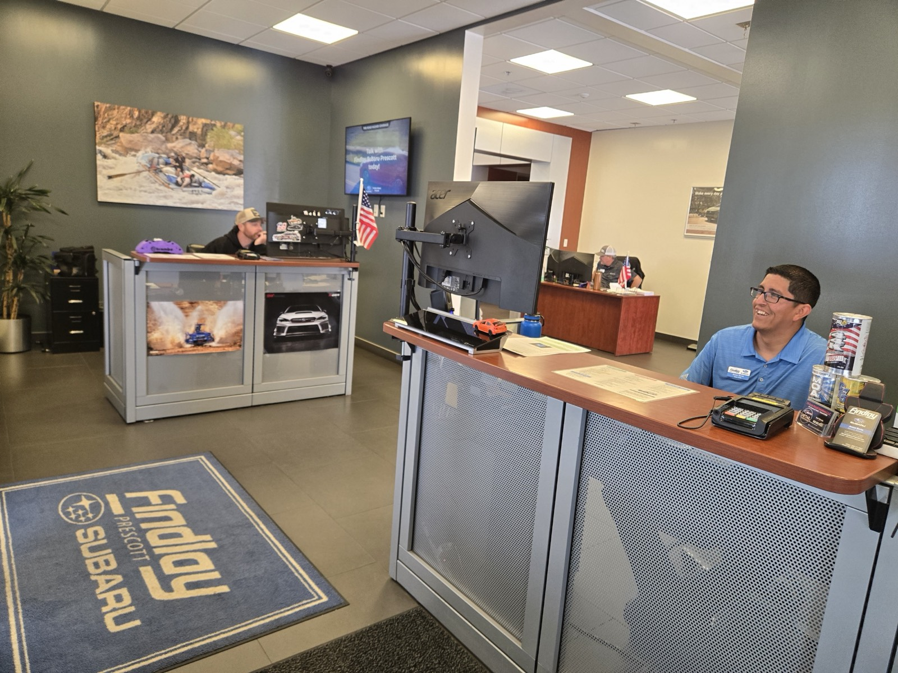
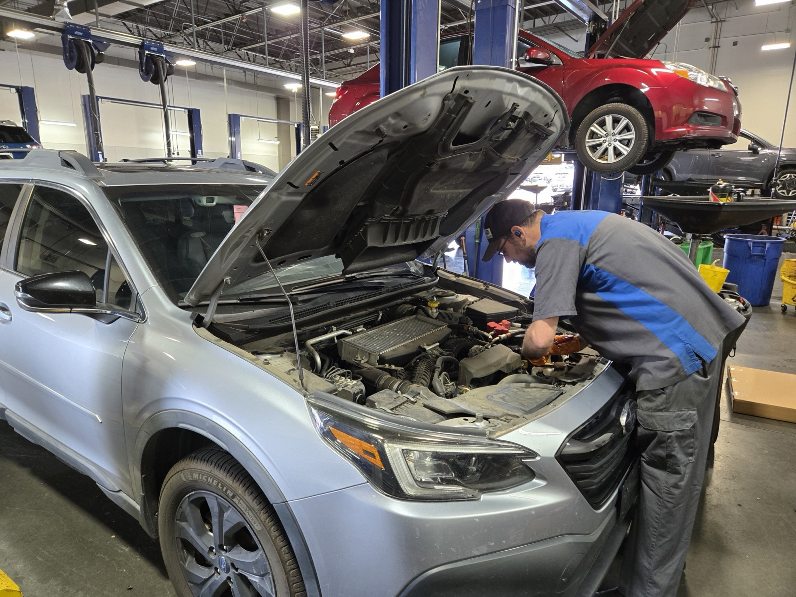
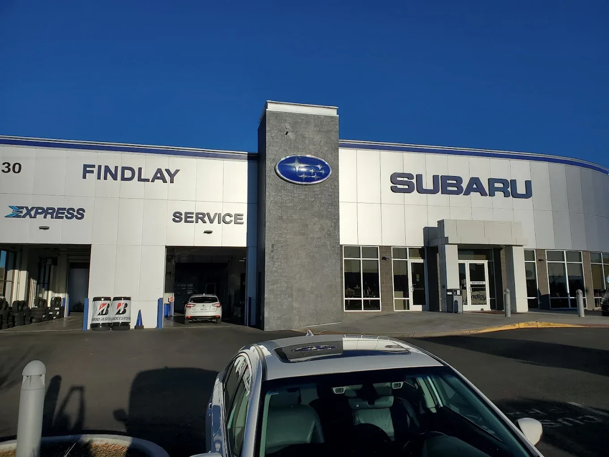

6,000 miEvery 6 months
Routine interval
Synthetic oil and filter change. Tire rotation. Multi-point inspection (brakes, belts, hoses, fluids, lights). Top off and inspect all fluid levels.
Schedule routine serviceYour Subaru is due every 6,000 miles or 6 months, whichever comes first. The big milestones are 30,000, 60,000, and 90,000 miles. At 5,400 feet, Prescott driving counts as "severe," so the calendar half of that rule matters.
Subaru recommends service every 6,000 miles or 6 months, whichever comes first.

At Findlay Subaru Prescott (3230 Willow Creek Road), Subaru-trained technicians follow the factory schedule for your exact model and model year. Three Subaru Certified Master Technicians are on staff, and our Fixed Operations Director oversees service and parts.
Forester, Outback, Crosstrek, Ascent, Solterra, Uncharted or Trailseeker, the table below is how the factory plan generally breaks down. Your model year sets the specifics, which is why our advisors pull your VIN before quoting a visit.
Subaru Parts and Service on scheduled maintenance, the factory schedule this guide walks through for Prescott driving.
30-second interval check
When is your Subaru due? Answer three questions.
A guide to the published menu, not a quote. We confirm against your VIN before any work is authorized.
Prescott driving falls under Subaru's "severe" or "special operating conditions" column. Short trips and monsoon dust pull your real service interval toward the shorter end, and mountain grades and towing do the same.
Prescott Subarus climb and descend all day, and run the air conditioning hard from May into September. Then they push through monsoon dust and washboard on the way to Granite Mountain and the Williamson Valley trailheads. That is exactly the "severe" column in your owner's manual.
So when we say every 6,000 miles or 6 months, the 6-month half of that rule does real work here. A Forester that only sees 4,000 miles a year still needs its oil, fluids, and inspection on the calendar. Heat cycles and altitude age a vehicle even when the odometer says otherwise.
Low-mileage drivers are the ones most likely to skip a visit, and they are also the ones whose fluids degrade on time anyway. Six months is six months at altitude. We log every visit against your VIN, so the record holds up if a covered repair ever comes due.
Every 6,000 miles you get oil, a tire rotation, and a multi-point inspection. At 30,000 miles, filters and brake fluid join the list. By 60,000 miles, spark plugs come due: the factory specification calls for new plugs every 60,000 miles or 6 years on most Subaru engines. Major services keep landing every 30,000 miles after that, so 120,000, 150,000, and 180,000 are milestones too. At every visit your advisor goes through the service history with you, so anything skipped gets caught, right down to an alignment check every 12,000 miles.

Synthetic oil and filter change. Tire rotation. Multi-point inspection (brakes, belts, hoses, fluids, lights). Top off and inspect all fluid levels.
Schedule routine serviceEverything above, plus: replace engine and cabin air filters, replace brake fluid, inspect brake pads, rotors, and suspension, and inspect the drive belt and CVT operation. Current pricing is on our service specials page.
Book your 30K serviceThe 30K items repeat, and spark plugs come due (the factory interval is 60,000 miles or 6 years on most Subaru engines). Replace brake fluid again. Closer inspection of CVT fluid, axles, steering, cooling system, and transmission. Current pricing is on our service specials page.
Book your 60K serviceReplace engine and cabin air filters. Replace brake fluid. Full inspection of CVT, drivetrain, and suspension. Current pricing is on our service specials page.
Book your 90K serviceSolterra, Uncharted, or Trailseeker: no oil changes or spark plugs. But tire rotations, brake fluid, cabin filter, and battery-system checks still belong on a schedule. Every Subaru EV carries an 8-year / 100,000-mile battery warranty.
Schedule EV serviceForester, Outback, Crosstrek, Ascent, Solterra, Uncharted, or Trailseeker. Your exact model and model year set the specifics. Our advisors pull your VIN before quoting any visit, so the schedule matches your car.
Get a model quote*Prices above are subject to change without prior notice.
Solterra, Uncharted and Trailseeker all skip oil changes and spark plugs, but tire rotations, brake fluid, cabin filter, and battery-system checks still belong on a schedule. The three Subaru EVs we service:
All three fast-charge from 10% to 80% in about 28 minutes, and every Subaru EV sold in the U.S. carries an 8-year / 100,000-mile battery warranty. Keeping service records current protects that coverage.
Staying on the factory schedule is not only about wear. Documented, on-time maintenance is what backs your coverage if a covered repair ever comes due. We log every visit against your VIN.
| Coverage | TermOn a new Subaru | What it protectsIn plain terms |
|---|---|---|
| Bumper-to-bumper | 3 years / 36,000 miles | Most factory components against defects |
| Powertrain | 5 years / 60,000 miles | Engine, transmission, and drivetrain |
| EV battery (Solterra, Uncharted, Trailseeker) | 8 years / 100,000 miles | The high-voltage battery system |
| Rust perforation | 5 years / unlimited miles | Body panels that rust through from the inside |
Documented, on-time maintenance is what backs those numbers up if a covered repair ever comes due. Our service department logs every visit against your VIN, so the record is there when you need it. Service at Findlay Subaru Prescott also means Genuine Subaru parts matched to your specific model.
New Subarus include Maintain the Love: 1 year / 12,000 miles of complimentary maintenance, or 1 year / 10,000 miles on the Solterra EV. That covers the early routine intervals at no charge while you build the service history that protects your warranty.
We are part of Findlay Automotive Group, and our service lane reflects how we operate: honest service and straight talk. That approach shows up across nearly every one of our 4.8-star reviews.
Customers single out "thorough inspections" and staff who "keep you informed on service progress." Our Fixed Operations Director oversees the service and parts operation.
When you bring your Subaru in for a mileage service, you get three things:
It is the same "the price you see is the price you pay" approach the dealership applies on the sales side.
"Thorough inspections, and they keep you informed on every step of the service. No pressure, no upselling, they tell you what is due now and what can wait." Paraphrased · recurring theme in service-department reviews · Read on Google →
For oil changes, tire rotations, and the lighter 6,000-mile items, Express Service runs Monday through Saturday: 7 AM to 5 PM Monday, 8 AM to 5 PM Tuesday through Friday, and 8 AM to 5 PM on Saturday. For the larger 30K / 60K / 90K services, book ahead so we can stage your parts.

Coupons for the Express oil change are available to meet or beat independent-shop prices. See the service specials page. Pricing for the 30K, 60K, and 90K packages is published there too. Book ahead so we can have your parts staged.
The waiting area is set up for the wait if you would rather stay. Customer dogs are always welcome in the service lounge.
From a 6,000-mile oil change to a full 90,000-mile service, scheduling online is the fastest way in. Findlay Subaru Prescott sits at 3230 Willow Creek Road, Prescott, AZ 86301.
Schedule service online and an advisor will confirm what is due for your model and mileage. Phone lines and contact options are on the contact page. Reach out, and we will pull your VIN before quoting any visit.
Both your routine oil changes and your major mileage services are handled by the same Subaru-trained team using Genuine Subaru parts. Schedule your maintenance visit →
We keep Prescott and Yavapai County Subarus on their factory maintenance schedule, using Genuine Subaru parts and fluids. You get a straightforward breakdown of what your car needs at its current mileage. Subaru Certified Master Technicians handle the whole lineup, including the Solterra, Uncharted and Trailseeker EVs.
Factory-correct parts and fluids for your exact model. An honest breakdown of what your car needs right now. A written account of what was inspected. The price you see is the price you pay.
Maintain the Love covers 1 year / 12,000 miles of complimentary factory-scheduled maintenance on a new Subaru, or 1 year / 10,000 miles on the all-electric Solterra. Available at participating retailers. Express oil-change pricing is on our service specials page, with coupons available to meet or beat independent-shop pricing. Subaru Loves to Care partners with City of Hope Cancer Center.
3230 Willow Creek Road, Prescott, AZ 86301. Service Mon–Fri 7 AM to 6 PM, Sat 8 AM to 5 PM (Express only), closed Sunday. Express walk-ins stop 4 PM Mon–Fri, 3 PM Sat.
Schedule: book service online.
Every 6,000 miles or 6 months, whichever comes first. Because Prescott driving falls under Subaru's "severe" operating conditions, between the altitude, the heat and the dust on mountain grades, the 6-month calendar interval matters even if you drive few miles.
The big ones are 30,000, 60,000, and 90,000 miles. Spark plugs come due at 60,000 miles or 6 years on most Subaru engines. The 30K service focuses on filters and brake fluid, and the 90K service is a full inspection of the CVT, drivetrain, and suspension. The 30,000-mile pattern keeps going after that, at 120,000, 150,000, and 180,000 miles. Your advisor reviews the history with you at each visit, alignment checks every 12,000 miles included, so nothing gets skipped.
You need to follow Subaru's maintenance schedule and keep records. Servicing at Findlay Subaru Prescott means factory-correct parts and fluids for your model, with every visit logged against your VIN. That keeps your bumper-to-bumper (3 yr / 36,000 mi) and powertrain (5 yr / 60,000 mi) coverage well documented.
Yes. There are no oil changes or spark plugs, but tire rotations, brake fluid, cabin filter, and battery-system checks stay on a regular schedule. Every Subaru EV's battery is covered for 8 years / 100,000 miles.
Yes. Express Service handles walk-in oil changes and tire rotations. Hours are Monday 7:00 AM to 5:00 PM, Tuesday to Friday 8:00 AM to 5:00 PM, and Saturday 8:00 AM to 5:00 PM. Walk-ins stop at 4:00 PM on weekdays and 3:00 PM on Saturday. Current Express oil-change pricing is on our service specials page, with coupons available on the specials page. For 30K, 60K, or 90K services, booking ahead lets us stage your parts.
Tell us your model, model year, and mileage. We pull your VIN and follow the factory schedule, then walk you through what your Subaru needs at its current mileage. Honest service, honest pricing.